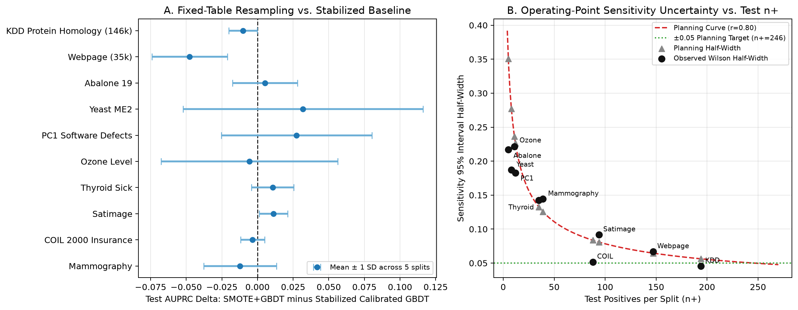
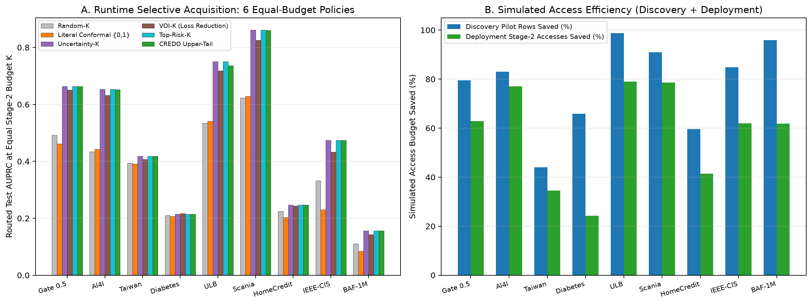

CREDO: Budgeted Channel Discovery and Selective Feature Acquisition for Imbalanced Prediction
Admission-Time Screening Motivation & Methodological Design
Grounded on UCI Diabetes 130-US Hospitals (99,343 discharged-alive non-hospice encounters after upfront outcome-independent eligibility filtering across 71,518 patients; 11.39% <30-day readmission):
1. Baseline Overlap & Uncertainty Accounting
Using strictly the 7 true admission-intake fields (age, gender, race, admission type/source, payer code, weight flag), stabilized GBDT achieves 0.1272 AUPRC (5.92% certified sensitivity at 5% FPR). Pure prior shifts preserve population ranking (Lemma 1), while small minority sets require exact Wilson 95% confidence intervals.
2. Known-Probability Stratified Case-Cohort Ĝm
Measuring candidate channels on 100% of training cases plus a known-probability baseline-stratified control subcohort (π0,b > 0, exact Horvitz–Thompson weights summing to N0) estimates conditional mutual information I(Y; Zm | Xbase) via offset-anchored GBDTs (Lemma 2), lifting Diabetes single-GBDT AUPRC to 0.2307 (98.7% of all-6-native-channels GBDT) on a 34.2% pilot.
3. Six-Policy Routing & Explicit Failure Boundaries
Stage-1 {1} singletons exhibit 3.8%–38.8% PPV under rarity (Proposition 1). Upper-tail conformal routing beats literal {0,1} ambiguity routing on 9/9 cohorts, tracks Top-Risk-K when Stage-1 risk stays below qtarget, and yields to VOI-K when top-risk pockets carry irreducible ambiguity (Simulation 6).
1. Fixed-Table Benchmark Suite Across 10 Datasets

2. Native-Channel Discovery & Complexity Ablation (45 Native Splits)
| Cohort (Provenance) | Pilot Used | A0: Base (Xbase) | A4: Global MI (100%) | A4u: Unm Pilot Ĝm | A5: Strat Pilot Ĝm (Primary) | A7: Hybrid Lattice | Ref: All-Native GBDT | Holm p (A5 vs A0) |
|---|---|---|---|---|---|---|---|---|
| Gate 0.5 (Sim., 12k) | 20.5% | 0.2104 | 0.5415 | 0.7964 | 0.7964 | 0.8129 | 0.7940 | 0.00002 |
| UCI AI4I (Syn. Phys., 10k) | 16.9% | 0.3606 | 0.7404 | 0.7428 | 0.7395 | 0.7339 | 0.8702 | 0.00299 |
| UCI Taiwan Credit (Obs., 27k) | 56.0% | 0.2474 | 0.4461 | 0.4461 | 0.4461 | 0.4505 | 0.4506 | 0.00025 |
| UCI Diabetes Adm. (Obs., 99k) | 34.2% | 0.1272 | 0.2307 | 0.2307 | 0.2307 | 0.2307 | 0.2338 | 0.00233 |
| ULB Credit PCA (Obs., 285k) | 1.2% | 0.4821 | 0.7428 | 0.7428 | 0.7541 | 0.7723 | 0.7251 | 0.01775 |
| Scania APS (Obs., 76k) | 9.0% | 0.5260 | 0.8499 | 0.8655 | 0.8662 | 0.8699 | 0.8991 | 0.00233 |
| Home Credit 7T (Obs., 308k) | 40.4% | 0.1678 | 0.2489 | 0.2557 | 0.2557 | 0.2585 | 0.2615 | 0.00006 |
| IEEE-CIS 2T (Obs., 591k) | 15.1% | 0.1974 | 0.4905 | 0.4974 | 0.4974 | 0.4983 | 0.5078 | 0.00123 |
| NeurIPS BAF (Priv. Syn., 1.0M) | 4.1% | 0.0795 | 0.1613 | 0.1613 | 0.1613 | 0.1688 | 0.1643 | 0.00299 |

3. Equal-Budget Runtime Selective Acquisition Across Six Policies

Quickstart
git clone https://github.com/deesatzed/imboreceipt.git cd imboreceipt python3 -m venv .venv && source .venv/bin/activate pip install -e ".[dev]" pytest -q # 31 passed imboreceipt bench-reconstructed --out results/reconstructed --n-seeds 5 --uncapped